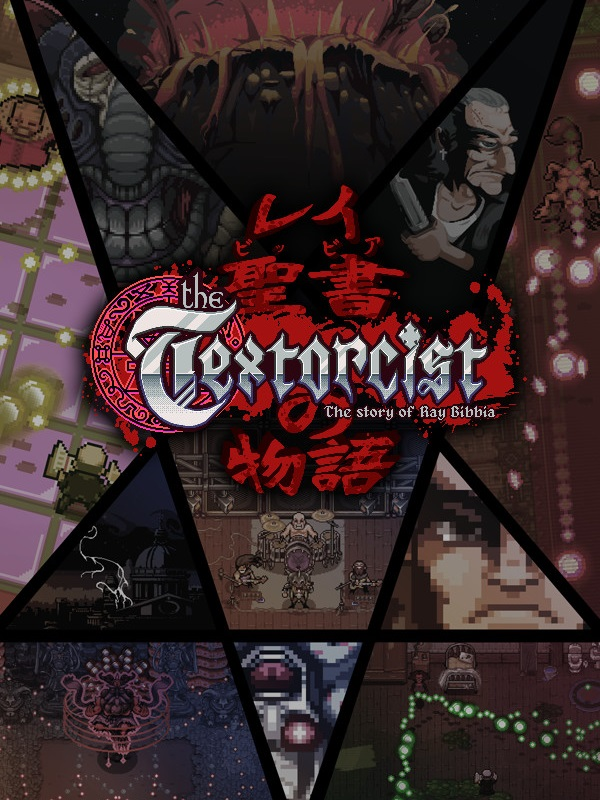

The Textorcist: The Story of Ray Bibbia
Detalhes
|  | |
| Tempo de jogo | Não Jogado |
| Última Atividade | Nunca |
| Adicionado | 11/02/2025 13:17:39 |
| Modificado | 11/02/2025 13:29:02 |
| Status de Conclusão | Not Played |
| Biblioteca | Gog |
| Fonte | GOG |
| Plataforma | PC (Windows) |
| Data de Lançamento | 14/02/2019 |
| Pontuação da Comunidade | 66 |
| Avaliação da crítica | 82 |
| Pontuação do Usuário | |
| Gênero | Adventure Indie Shooter |
| Desenvolvedor | Mega Cat Studios Morbidware |
| Editor | Headup Games |
| Funções | Single Player |
| Links | Itch Steam Official GOG Epic Discord Twitch |
| Tag | |
Descrição

Get ready for an electrifying mix between a bullet hell and a typing game! Dodge bullets while typing exorcisms at the very same time: turn on both sides of your brain and jump into the adventure of Ray Bibbia, a private exorcist who's going to face the threats of a demonic outbreak and deal with his dark and sinful past at the same time! A city in decay, streets filled with thugs, crime and censorship and only one man to stop it all. Groundbreaking gameplay, exorcists, demons, metal singers, pimps, the Pope, drama, bad jokes and tons of hardcore action-filled boss battles for the first type ‘em up game ever realized.
A TYPING EXPERIENCE: In order to defeat the forces of evil, learn how to type your exorcisms with your keyboard or with your joypad WHILE dodging tons of bullets, dealing with puddles of barf, defusing bombs, singing at the mic of a metal show and more during intense Boss Battles: easier said than done. Hold your Bible tight, both hands needed!
THE CITY: Rome is the theatre of our adventure, discover new locations and fight in one of the biggest metropolis in history, home of some of the craziest characters and enemies! Behind a demonic outbreak, unearthly forces are scheming to seize power and subvert the order of the the biggest religious organization in Rome: The Holy Church has reached unlimited powers over the streets of the city, but how can our protagonist be sure of their good deeds? Unravel the demonic plot aimed to overturn the order in the city and put together the pieces of the dark past behind Ray Bibbia!
THE CAST: From Goth maids to gun-crazed gangsters and the Pope himself, Ray will get his hands dirty by exploring a great variety of locations to solve a mystery that’s going to grow heavier as it takes shape. Who’s gonna turn out to be a friend and who’s gonna stab Ray behind his back?
Are you a fast typer? Can you read and spell Latin while you dodge bullets? THIS is the game you're looking for! Real exorcisms, English, Latin, and more! Avoid making mistakes and reach the highest combo! Compete with your friends by spelling the “perfect exorcism” and compare with their scores on online leaderboards!
Features:
- An intense storytelling
- Tons of bullets
- Lots of typing
- 10 Boss fights
- Challenging twisted typing mechanics for every boss
- Type even to open a door
- Type on a Holyvetti computer
- Show it off with online leaderboards
- Play with the keyboard for a typing experience or with a gamepad for a rhythm experience
- Original Soundtrack composed by GosT
- Some more Bullets
All these features and even more, if you're a fan of shooters, a masochist, a wannabe exorcist, or you just need some black comedy in your life, don't miss The Texorcist!